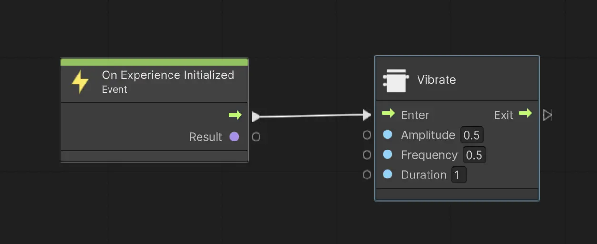
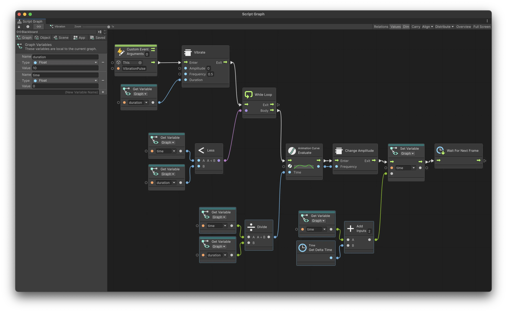

Vibrations
Meadow allows you to incorporate haptic feedback into your experiences through vibrations. This feature enhances user interaction by providing tactile responses to various actions or events within your experience.
Availability
Currently, vibration functionality is fully supported on iOS devices. Support for Android devices is planned for future updates. When designing your experience, consider making vibration an optional feature to ensure compatibility across all platforms.
Using Vibrations in Visual Scripting
To implement vibrations in your Meadow experience, you’ll need to use visual scripting nodes. There are four main nodes related to vibrations:
Vibrate
This node initiates a vibration with customizable parameters.
Parameters:
- Amplitude:
float- The strength of the vibration (0.0 to 1.0). - Frequency:
float- The frequency of the vibration in hertz. - Duration:
float- The length of the vibration in seconds.
PlayEmphasis
This node plays a quick, emphatic vibration.
Parameters:
- Amplitude:
float- The strength of the emphasis (0.0 to 1.0). - Frequency:
float- The frequency of the emphasis in hertz.
Change Frequency
This node allows you to modify the frequency of an ongoing vibration. Note that this can only be used after the Vibrate node has been activated.
Parameters:
- Frequency:
float- The new frequency to set for the ongoing vibration.
Change Amplitude
Similar to Change Frequency, this node lets you adjust the amplitude of an ongoing vibration. It can only be used after the Vibrate node has been activated.
Parameters:
- Amplitude:
float- The new amplitude to set for the ongoing vibration (0.0 to 1.0).
Example Usage
Here’s are two examples of how you might use the Vibrate node in your visual scripting.
Simple Example
This graph will play a 1 second long vibration as the experience starts:

Pulsating Vibration
To create a slowly pulsating vibration, you can utilize an animation curve as in the following example:

This graph creates a pulsating vibration effect. Here’s how it works:
- The graph starts with a Custom Event, which could be triggered by user interaction or another game event.
- The Vibrate node is called with an initial amplitude of 0, a frequency of 0.5 Hz, and a duration pulled from a graph variable.
- A While Loop is used to continue the vibration effect for the specified duration.
- Inside the loop, an Animation Curve is evaluated over time to create a smooth pulsating effect. This curve likely goes from 0 to 1 and back to 0, creating a wave-like pattern. Make sure the curve only goes between 0 and 1.
- The curve length is one second, therefore we divide the current time by the duration to get a value between 0 and 1.
- The Change Amplitude node is used to continuously update the vibration’s amplitude based on the evaluated curve value. This creates the pulsating sensation.
- The loop continues until the specified duration is reached, which is checked using the Less node comparing the current time against the duration.
- Time tracking is handled using the Get Delta Time node and basic math operations to accumulate the total elapsed time.
This setup allows for a much more nuanced and dynamic vibration effect compared to a simple, static vibration. The pulsating effect can provide more engaging haptic feedback for various in-experience events or interactions.
Remember to test your vibration implementations on actual devices to ensure they provide the intended user experience. Keep in mind that the behavior may vary across different device models and operating systems.
Ideas for Vibration Usage: Invisible Haptic Labyrinth
Create an invisible labyrinth that players navigate solely through vibrations. In this game concept:
- The intensity of the vibration increases as players get closer to the walls.
- Players lose life when they hit the walls.
- Players can collaborate by guiding each other and indicating wall locations.
- The screen doesn’t need to render any visual content, as this is purely a haptic-based game.
Technical Considerations:
- The game would need to use Geolocation or Cloud Anchors to align the labyrinth between players.
- It should be played in a large, open space without physical obstacles.
This concept showcases how vibrations can be used creatively to craft unique, immersive experiences that go beyond traditional visual-based gameplay.